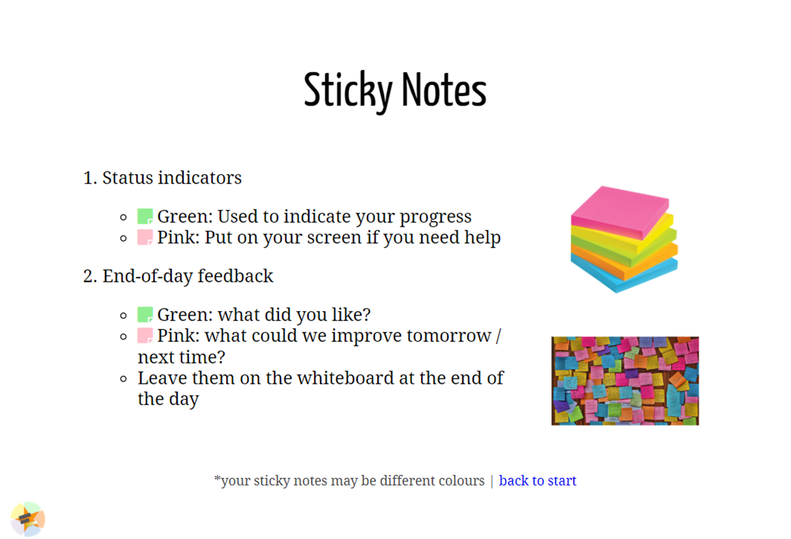
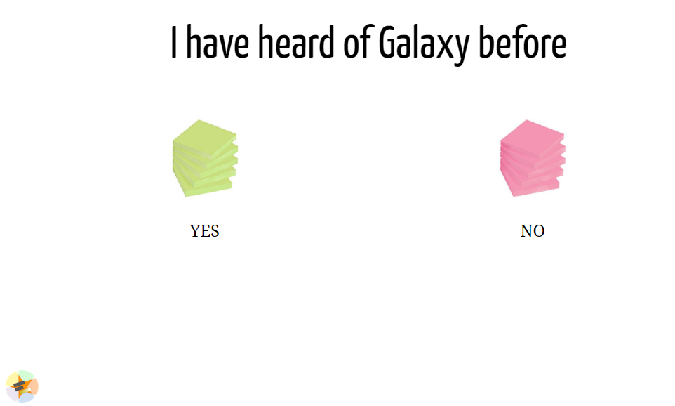
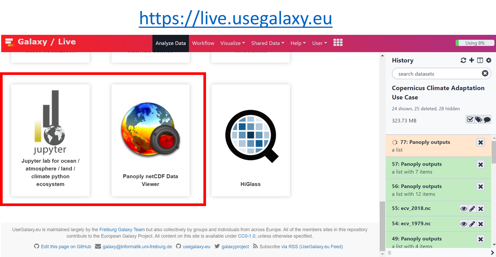
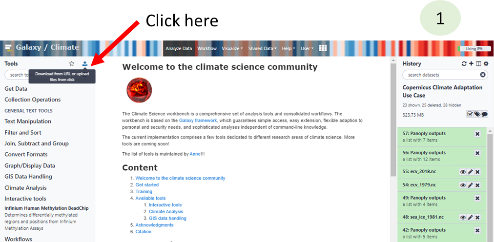
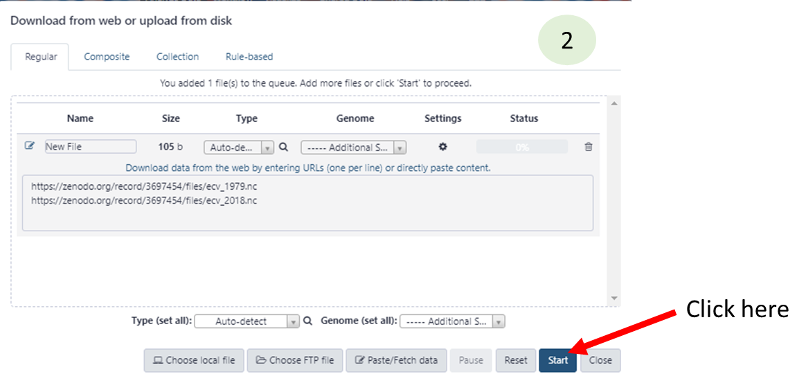
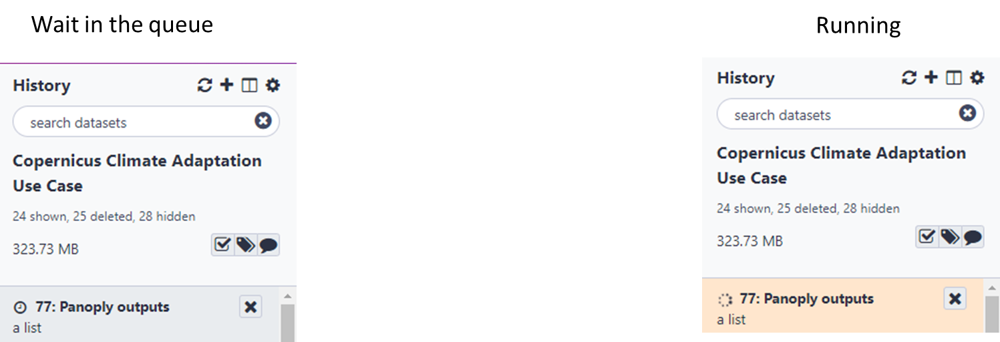

Home
Norway/Sweden training
http://bit.ly/C3S-NO-SE
Data extraction and easy visualization with galaxy climate science workbench
Author: Anne Fouilloux
How do we use sticky notes?

Have you heard about Galaxy?

Have you ever used Galaxy?

Galaxy Climate workbench
Galaxy Interactive environment for Climate data analysis and Visualization

Set up for workshop
- Register and log in to https://climate.usegalaxy.eu
- You may receive an e-mail with an activation link
- Go to the following URL:
https://usegalaxy.eu/join-training/c3s to join the c3s training group
- Give us higher priority for running: *valid on 6th March 2020 only!*. Skip this step if you join on a different day.
General introduction to Galaxy
Panoply in Galaxy
Short version (for impatients who already know Panoply...)
- Go to https://climate.usegalaxy.eu/
- Upload sample dataset
- Click on "Paste/Fetch data"

https://zenodo.org/record/3697454/files/ecv_1979.nc
https://zenodo.org/record/3697454/files/ecv_2018.nc
- Go to Start Panoply in Galaxy
- Select dataset ecv_1979.nc and press Execute
- If you do not see ecv_1979.nc in yourhistory (right panel), make sure to first switch to the history that contains your dataset.
Wait for Panoply to be ready

- Once running go to User --> Interactive Tools and click on Panoply interactive tool to launch it
- Then use Panoply as usual.
Start Panoply in Galaxy
- To save your plots, make sure you store them in output folder
- Quit Panoply when you are done and go back to Analyze to get your outputs (click on Panoply outputs )
- You can view your plot on Galaxy using
- You can download your plot on your laptop using
Pangeo JupyterLab in Galaxy
pangeo Jupyterlab with all the software stack (python packages) and data is available on Galaxy.
- Go to JupyterLabfor Ocean/Atmosphere/Land/Climate python ecosystem
- Select dataset ecv_1979.nc and press Execute
- Go to User --> Interactive Tools and click on Climate interactive tool to launch it
- Then you should get a jupyterLab session
- Open ipython_galaxy_notebook.ipynb
- To save your plots, data, etc. follow instructions given at the top ofthe default notebook( get , put ) SAVE your work regurlarly in Galaxy using put; for instance, in a notebook code cell:
put("ipython_galaxy_notebook.ipynb")where ipython_galaxy_notebook.ipynb is the name of your notebook.
In a similar way, do not forget to save data you cannot easily reproduce:
put("data.nc")where data.nc is a netCDF file you would line to save in Galaxy.
- QuitJupyterLab when you are done and go back to Analyze to get your outputs (those you added with put )
- You can view your plot on Galaxy using
- You can download your plot on your laptop using
A more comprehensive tutorial can be found here
Learn more about Galaxy
- Galaxy 101 for everyone
- Visualize Climate data with Panoply netCDF viewer
- JupyterLab in Galaxy (**please make sure to use the a target="_blank" href="https://live.usegalaxy.eu/?tool_id=interactive_tool_climate_notebook">JupyterLabfor Ocean/Atmosphere/Land/Climate python ecosystem</a> rather than the default jupyterLab environment (that does not contain any climate related packages).
- Import shared histories (click on the link)
Feedback